关系数据库设计（Relational Database Design）
关系数据库设计有两大阶段：一是概念设计阶段以E-R 模型方式通过实体、关系等抽象概念描述业务需求；二是逻辑设计阶段即关系模型（关系数据库的最终数据模型），主要是以函数依赖理论为基础，通过规范化设计优化结构，比如通过范式（1NF、2NF 等）逐步消除数据冗余与操作异常
数据库规范化设计：减少数据冗余（同一组数据在多个表中重复存储）避免和定义一个规范的表间结构，以更好地实现数据完整性和一致性
所以通过数据库规范化设计会降低数据存储和维护数据一致性的成本，便于设计合理的关系表间的依赖和约束关系
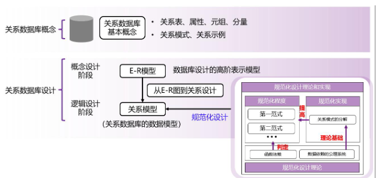
其中逻辑设计过程大致为： “判断模式优劣→分解优化→依赖理论支撑”
- 判断一张表的结构是否 “合理”—— 核心标准是无数据冗余、无操作异常（插入 / 删除 / 更新异常）
- 量化判断工具：范式（Normal Form）（对应下方 “范式” 模块），从低到高分为 1NF、2NF、3NF、BCNF、4NF，范式级别越高，表结构越 “良好”（冗余越少、异常越少）。
- 若模式 “不良”，则进行 “模式分解”：将一张结构混乱的大表，拆分为多张结构清晰的小表（{R₁, R₂, ..., Rₙ}）。
- 每个子表都必须是 “良好形式”：即每张小表都满足较高范式（如 3NF 或 BCNF），各自消除冗余和异常；
- 分解是 “无损连接分解（lossless-join decomposition）”，可以通过分解的子表通过自然连接还原原表
所有判断和分解操作，都依赖两大核心依赖关系：
- 函数依赖（functional dependencies/FD）：属性间的 “决定关系”（如 “学号→姓名”“部门名→部门地址”），是判断范式、识别冗余的核心工具（比如通过 “非候选键→属性” 的依赖，发现表需拆分）；
- 多值依赖（multivalued dependencies/MVD）：解决 “一对多” 场景的冗余问题（函数依赖覆盖不到），比如 “员工→→孩子”“员工→→电话”，是 4NF 的基础，指导更精细的拆分。
具体设计过程如下：
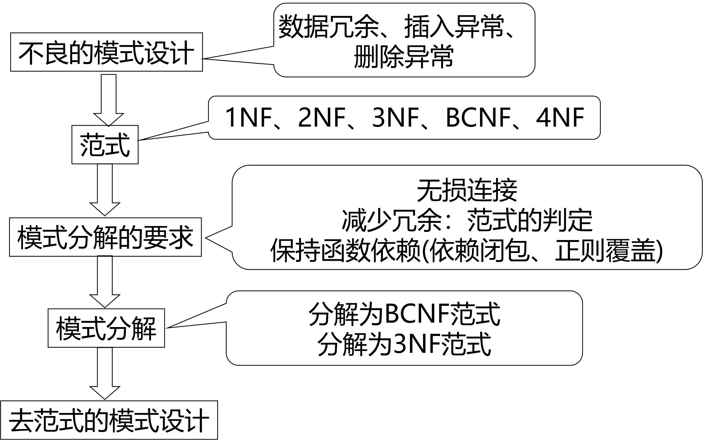
好的关系设计特点（Features of Good Relational Design）
首先理解什么是否需要拆分表， 以inst_dept为例
inst_dept是合并了 “教师表（instructor）” 和 “部门表（department）” 的表（包含ID, name, dept_name, building, budget等字段），必须拆分的原因是 “存在不合理的函数依赖”：
- 函数依赖的矛盾：
dept_name → building, budget（部门名决定部门的办公地点和预算），但dept_name不是inst_dept的候选键（inst_dept的候选键是教师 ID）；- 冗余的直接后果：同一部门的
building和budget会随该部门的每个教师重复存储（比如 “计算机系” 有 10 名教师，building和budget会被存 10 次），导致存储冗余 + 更新成本高（修改部门预算需同步改 10 条记录）。
拆分表的核心逻辑是 “消除‘非候选键→属性’的函数依赖”：即 “非候选键是否决定其他属性”：
- 规则：若一个属性集（如
dept_name）能决定其他属性（如building, budget），但它不是当前表的候选键，说明该表 “职责过载”，需要拆分为独立的表（如department(dept_name, building, budget)）； - 例子：
inst_dept中dept_name决定building, budget，但dept_name不是候选键→拆分出department表，仅保留instructor(ID, name, dept_name)，通过dept_name关联两张表。
有损分解（A Lossy Decomposition）
有损分解（A Lossy Decomposition）：原表经过分解之后进行自然连接，如果形成的表与原表相同则为无损分解；否则为有损分解
[!note]
无损分解的标准：以
R(A,B,C)拆为R1(A,B)和R2(B,C)为例，只要R1和R2的交集（B）是其中一个表的候选键（比如B是R2的候选键），连接时就能通过B准确匹配，还原原始数据。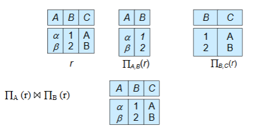
不是所有拆分都有效 ——“有损分解” 会丢失数据；而拆分表必须满足 “无损连接”（拆分后的表能还原原始数据），否则是错误拆分：
- 反例：将
employee(ID, name, street, city, salary)拆为employee1(ID, name)和employee2(name, street, city, salary)； - 问题：若存在同名员工（比如两个 “张三”），
employee1和employee2自然连接时，会把不同员工的地址、薪资错误关联，无法还原原始employee表的正确数据（这种拆分叫 “有损分解”）；
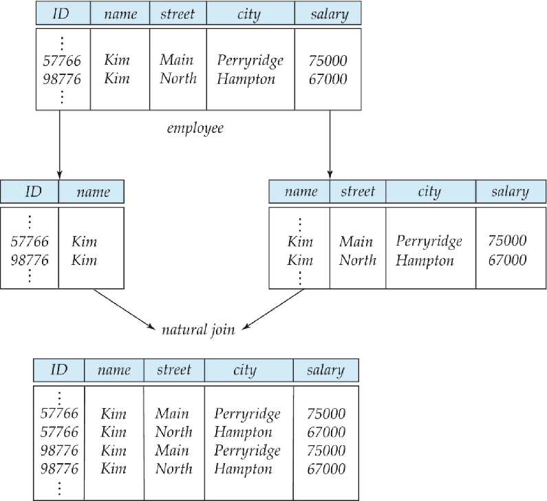
原子域和第一范式（Atomic Domains and First Normal Form）
核心是第一范式（1NF）的定义、原子性判断标准
原子域（Atomic Domain）
原子域指属性的取值是 “不可再分的最小单元” —— 不能把一个属性值拆成多个有独立意义的部分，否则该属性的域就不是原子的。或者反过来说，一个域是原子的（atomic ），如果该域的元素被认为是不可分的单元。
非原子域的典型例子：
- 集合类属性：如 “客户的账号集合”（一个客户对应多个账号，直接存在一个字段中）、“账号的所有者集合”（一个账号对应多个所有者）；
- 复合属性：如 “家庭住址”（包含省、市、区、街道等，可拆分）；
- 可拆分的标识：如学号
CS0012（前两位CS代表计算机系，后四位0012是序号，若需从学号中提取 “部门”，则学号的域不是原子的）。
第一范式（1NF）
根据上述原子域的概念引申出第一范式（1NF）的判定标准：
称一个关系模式 R 属于第一范式（First Normal Form，1NF），如果 R 的所有属性的域都是原子的。
- 严格定义：若关系模式
R中所有属性的域都是原子的，则R满足第一范式（1NF）；
1NF 是关系数据库的最低要求（课件明确 “默认所有关系都满足 1NF”），不满足 1NF 的表无法被关系数据库正常存储和处理；
而非原子值会增加存储复杂度，并导致数据的冗余（重复）存储
但是必须注意：原子性本质上是域中元素的使用属性
- 原子性是 “使用层面” 的属性（而非绝对属性）即原子性不是属性本身的固定特性，而是由使用方式决定
- 字符串
CS0012，若仅作为 “学生唯一标识”（不拆分使用），则是原子的；若需要从字符串中提取 “部门”（CS）、“序号”（0012），则该字符串的域不是原子的；
范式
函数依赖（Functional Dependency ）
函数依赖是对 “关系模式中合法数据” 的硬性约束即合法关系的约束条件 —— 它要求：若一组属性（α）的取值确定，另一组属性（β）的取值必须唯一确定（α 决定 β，记为 α→β）。
[!tip]
严格数学定义：设 R 为关系模式，α⊆R（α 是 R 的属性子集）、β⊆R（β 是 R 的属性子集）：
- α→β 在 R 上成立，当且仅当：对 R 的任何合法数据（关系 r），任意两个元组 t₁和 t₂，若 t₁[α] = t₂[α]（α 的属性值相同），则必然有 t₁[β] = t₂[β]（β 的属性值相同）。
关系 r (A,B) 的数据为：(1,4)、(1,5)、(3,7)
- A→B 不成立：A=1 时，B 有 4 和 5 两个不同值（A 无法唯一决定 B）；
- B→A 成立：B=4→A=1、B=5→A=1、B=7→A=3（B 的每个值对应唯一 A）。
函数依赖源于客观世界的规则（如 “部门名→部门地址”“学号→姓名”），不是从某组具体数据中总结出来的。
而特定数据属性之间的关系，并不能代表该关系模式所有实例数据之间可能的关系：比如某组数据可能 “偶然满足” 某 FD（如某班无同名学生，“姓名→学号” 偶然成立），但不代表该 FD 对所有合法数据都成立
同时Functional Dependency 是 “键（Key）概念的推广”
- 键的本质是 “能决定所有属性的属性集”（如候选键 K→R），而 FD 是 “属性集之间的决定关系”—— 键是 FD 的特殊情况（α=K，β=R），FD 则覆盖了更广泛的属性依赖场景。
“平凡 FD” 和 “非平凡 FD”
Functional Dependency又分为 “平凡 FD” 和 “非平凡 FD”
- 平凡 FD：所有关系实例都必然满足的 FD（无实际约束意义）无需额外约束，判定标准是 β⊆α（β 是 α 的子集）；
- 若
β⊆α（右边属性集是左边属性集的子集），则α→β是平凡函数依赖。 - 简单来说，就是集合->子集的依赖
- 示例：ID,name→ID（右边 ID 是左边子集）、name→name（右边等于左边）；
- 若
- 非平凡 FD：需通过约束保证的 FD（有实际意义），如 ID→name、dept_name→building。
超键（superkey）和候选键（candidate key）
超键（Superkey）
- “K 是关系模式 R 的超键，当且仅当 K→R”（K→R 表示 “属性集 K 能决定关系 R 中的所有属性”）。
- 超键是能唯一标识一条记录的属性集—— 只要知道 K 中所有属性的值，就能确定这条记录中其他所有属性的值（无歧义）
- 注意：超键允许包含 “冗余属性”，只要核心标识属性存在即可，即只要子集存在唯一标识就可以作为超键
候选键（Candidate Key）
K 是关系模式 R 的候选键，当且仅当：
- K→R（K 是超键）；
- 不存在任何 α⊂K（α 是 K 的真子集），使得 α→R（移除 K 中任何一个属性后，剩余属性集不再是超键）。
候选键是 “最小的超键”—— 既满足 “唯一标识记录”，又不包含任何冗余属性（多一个属性多余，少一个属性不行）
[!tip]
超键只能表达 “某属性集能决定所有属性”（如 ID→R），而函数依赖可表达 “部分属性之间的约束关系”
函数依赖的价值在于：既可以表达 “超键→所有属性”（候选键的约束），也可以表达 “非超键→部分属性”（如 dept_name→building）或 “部分属性无依赖”（如 dept_name 不→salary）
SQL中的函数依赖
除了候选键和主键外，SQL没有提供函数依赖的支持，可以通过断言来完成
用「断言（Assertion）」实现普通函数依赖的校验：
写一个断言以保证在 R(A,B,C) 上成立 B→C
- 只要出现「同一个 B 值，对应了 2 个及以上不同的 C 值」，就违反了这个函数依赖
create assertion BtoC check ( not exists ( select B from R group by B having count(distinct C) > 1 ) );
Use of Functional Dependencies
函数依赖的本质是 “通过属性间的决定关系，规范数据的合法性与约束范围”，具体落地为两大核心作用：
- 检验关系的合法性（验证数据实例是否合规）
- 给定一组函数依赖集
F（如ID→name、dept_name→building），判断某张表的具体数据（关系r）是否符合这些规则。 - 若关系
r中所有元组都满足F中的每一条函数依赖，则称r满足F，即r是合法关系；反之则为非法。 - 比如在教师表中，若存在 “同一
ID对应两个不同name” 的元组，就违反了ID→name的 FD，可直接判定该数据实例非法，避免脏数据进入数据库。
- 给定一组函数依赖集
- 定义合法关系的全局约束（规范表结构的所有实例）
- 为关系模式
R（如表结构定义）指定函数依赖集F，要求R的所有合法实例（即该表的所有数据版本）都必须满足F，此时称F在R上成立。 - 比如为
instructor表定义ID→salary，意味着 “同一教师 ID 的薪资必须唯一”，无论后续插入、更新多少条数据，都不能违反该规则，从根源上保障数据一致性。
- 为关系模式
“实例偶然满足”≠“依赖全局成立”，即不能将 “实例偶然满足” 的依赖作为全局约束（即不能认为name→ID在instructor表上成立），否则会导致后续数据插入 / 更新时出现异常
函数依赖闭包（F⁺）
函数依赖闭包（F⁺）的本质 —— 由已知函数依赖集（F）通过逻辑推理导出的所有函数依赖的集合
- 若从已知的 F 中，通过合理推理能得出某条新的函数依赖（如由
A→B和B→C推出A→C），则称这条新依赖 “被 F 逻辑蕴含”。 - 闭包（F⁺）的本质：F⁺是 F 本身，加上所有被 F 逻辑蕴含的函数依赖的 “完整集合”。
- 关键关系：F⁺一定是 F 的超集 ——F 中的每一条依赖都属于 F⁺（自身蕴含自身），且 F⁺中还包含大量推导得出的新依赖。
[!tip]
- 已知 F = {
A→B,B→C}- 直接属于 F⁺的依赖：
A→B、B→C（F 本身的依赖）；- 推导得出的依赖：
- 传递律推导：由
A→B和B→C，推出A→C；- 自反律推导（平凡依赖）：
A→A、B→B、C→C、A→AB等；- 增广律推导：由
A→B推出AC→BC，由B→C推出AB→AC等；- 最终 F⁺包含上述所有依赖，形成完整的 “依赖全集”。
F⁺看似抽象，实则是后续所有规范化操作的基础
- 验证函数依赖是否成立：判断某条依赖（如
A→C）是否为 F 所蕴含，无需手动推导，只需检查该依赖是否在 F⁺中。 - 判定超键与候选键：某属性集 K 是超键，当且仅当
K→R（R 为所有属性）属于 F⁺；进一步筛选 “最小超键”，即可得到候选键。 - 支撑范式判定与模式分解：BCNF、3NF 等范式的核心是 “消除不合理依赖”，而 “不合理依赖” 的判断，本质是检查依赖是否符合 F⁺中的逻辑关系；模式分解的 “依赖保持” 约束，也需通过 F⁺验证。
BCNF范式（Boyce-Codd Normal Form）
BCNF（Boyce-Codd Normal Form，巴斯 - 科德范式）的严格定义：对关系模式 R，基于函数依赖集F的闭包F+中，所有的非平凡函数依赖 α→β，必须满足：箭头左边的属性集α，一定是R的超键。
- F+ ：函数依赖集F的闭包，指从F能推导出来的所有函数依赖（包括F本身 + 所有隐含依赖）；
- 超键 (Superkey) ：能唯一决定关系R中所有属性的属性集，候选键 / 主键都是超键的「最小版本」；
- 非平凡函数依赖 ：β⊆α，比如
dept_name→building,budget，这是我们设计中真正要约束的依赖，平凡依赖（如ID,name→ID）无意义，不影响 BCNF 判定。
BCNF 是比 3NF 更严格的范式，也是数据库设计的「理想范式」，它的核心目标：彻底消除关系模式中所有的「非超键决定属性」的不合理依赖，从根源上杜绝数据冗余和插入 / 删除 / 更新异常。
简单来说，在表中，任何能决定其他属性的属性集，都必须是能唯一标识整张表的超键。
inst_dept (ID, name, salary, dept_name, building, budget )为什么不满足 BCNF
dept_name→building,budget是 F+ 中的非平凡函数依赖，满足 2 个条件：
- 箭头左边：
α = dept_namedept_name不是inst_dept表的超键 → 因为dept_name只能决定building,budget，无法决定ID、name、salary等属性，不能唯一标识整张表的记录。所以不满足BCNF
BCNF 模式分解算法
当关系模式R，因为某一条非平凡函数依赖 α→β 违反 BCNF 时，拆分为两个子表：(α∪β)、(R−(β−α))
拆分结果：一定满足 BCNF + 一定是无损连接分解（拆分后能还原原表，不丢数据、不产生脏数据）。
已知违规依赖：
α = dept_name ， β = building,budget表 1：
α∪β={dept_name,building,budget}→ 部门表department，dept_name是主键，满足 BCNF；表 2：
β−α={building,budget}→ 原表去掉这两个属性即(R−(β−α))→{ID,name,salary,dept_name}→ 教师表instructor，ID是主键，满足 BCNF。例题：R(A,B,C,D),F={B→C}，拆分结果：表 1(B,C)、表 2(A,B,D)。
数据库一致性约束
数据库一致性约束的 5 种表达形式，按实用程度从高到低排序：
- PK（主键约束）：最常用，强制主键唯一性，核心约束；本质是函数依赖
- Check（检查约束）：常用，约束字段取值（如
salary>0），轻量高效； - Trigger（触发器）：实用，替代断言的主流方案（MySQL 无断言），实现复杂约束；
- FD（函数依赖）：理论核心，是所有约束的设计依据；
- Assertion（断言）：标准 SQL 语法，极少用，性能代价过高。
约束（包括函数依赖）在实际中校验的代价很高，除非约束只作用于同一张关系表（单个表）。即单个表的FD较为实用
如果只需要在分解后的「每一张子表」上分别校验对应的函数依赖，就能够保证「原表的所有函数依赖都成立」，那么这样的分解就称为 依赖保持（dependency preserving）。
定义：若关系模式 R(U, F) 分解为 R1(U1, F1), R2(U2, F2), ..., Rk(Uk, Fk)，并且原始关系模式 R 的每一个函数依赖要么由分解后的关系模式中的某个函数依赖集 F1, F2, ..., Fk 所逻辑蕴涵，则称该分解保持函数依赖。
- 若每次分解都恰好是一个函数依赖，则分解保持依赖
- 拆分表的时候，每次拆分的依据，就是某一个独立的函数依赖 α→β，把这个依赖的「决定方 + 被决定方」单独拆成一张表 → 那么这次分解一定是依赖保持的。
无法在所有情况下，同时实现「BCNF 范式」和「依赖保持」这两个目标，所以我们引入了一种更宽松的范式，称为 第三范式（3NF，Third Normal Form）
第三范式（3NF，Third Normal Form）
3NF第三范式严格定义 → BCNF一定是3NF的证明 → 数据库分解的三大目标 → BCNF的局限性（有异常但满足BCNF） → 引出多值依赖+4NF第四范式
对关系模式R，基于函数依赖集F的闭包F+中，所有的函数依赖 *α*→*β*，只要满足「三个条件中的任意一个」，则R满足 3NF。
α→β 是平凡函数依赖 ( β⊆α )，平凡依赖永远不影响范式判定，3NF/BCNF 都对其无要求
α 是关系模式 R 的超键 (Superkey)，和 BCNF 的核心条件完全一致！BCNF 的要求就是「所有非平凡 FD 的左部必须是超键」；
β−α中的每一个属性，都包含在R的某个候选键中
- β−α → 取「箭头右边的属性集 β 」中，不在箭头左边 α 里的那些属性即被α决定的、且不在决定方中的属性
- 被α决定的这些属性（β−α），每一个都必须是「主属性」即任意候选键的助兴
β−α中的不同属性，可以属于不同的候选键，不需要都在同一个候选键里，只要每个属性都在「某一个」候选键中即可。
3NF 是 BCNF 的「最小程度宽松版」：
- BCNF 只允许满足「条件 1、条件 2」；而 3NF 在 BCNF 的基础上，额外放宽允许满足条件 3。
- 3NF 允许存在「少量的、可控的、基于主属性的不合理依赖」即条件3，代价是引入极少量的冗余，但换来的是「依赖保持」这个核心工程需求。
[!important]
如果一个关系模式满足 BCNF，那么它一定、必然满足 3NF。
证明如下：
BCNF 的要求是：所有α→β∈F+，满足「平凡依赖 或 α 是超键」→ 这两个条件恰好是 3NF 的前两个条件；所以满足 BCNF 的关系，天然满足 3NF 的条件，BCNF 是 3NF 的真子集。
数据库模式分解
数据库分解的三大黄金准则：范式合规 > 无损连接 > 依赖保持
- 分解后的每一张子表，都必须是「良好范式」（good form）：子表满足3NF 或 BCNF， 消除冗余、避免操作异常；
- 分解必须是「无损连接分解（lossless-join）」：分解后的多张表，通过自然连接能完全还原出原始表的数据
- 尽可能满足「依赖保持分解（dependency preserving）」：原表的所有函数依赖，都能在分解后的某一张子表中完整体现，无需跨表连接就能验证；
第四范式（4NF）
存在一些满足 BCNF 的关系模式，但它们依然没有被「充分规范化」 → 依然存在数据冗余 + 操作异常。
BCNF 只能解决函数依赖 (FD) 带来的冗余和异常，但无法解决多值依赖 (MVD) 带来的冗余和异常
inst_info (ID, child_name, phone)① 一个教师可以有多个子女 ② 一个教师可以有多个电话 ③ 子女和电话之间没有任何关联
这个表中，不存在任何非平凡的函数依赖：则满足BCNF
教师的每个子女，都会和教师的每个电话组合成一条记录 → 记录数是「子女数 × 电话数」，大量重复存储 child_name 和 phone，冗余极高。
函数依赖 (FD) 无法描述这类冗余，需要引入新的依赖关系 → 多值依赖 (MVD)，进而引入更高的范式 → 4NF。
多值依赖的本质：α →→ β 表示「α 确定后，β 的取值和 R-β 的取值相互独立」；
classes (course, teacher, book)① 一门课程可以有多个教师授课 ② 一门课程需要多本教材 ③ 教师和教材之间无关联
虽然满足BCNF，但是给数据库课程新增一位教师 Marilyn，必须为该课程的每一本教材都新增一条记录存在插入异常，所以分解该表
teaches (course, teacher)→ 专门存课程和教师的关系text (course, book)→ 专门存课程和教材的关系
函数依赖理论（Functional Dependency Theory）
- 先建立一套 “数学规则”，用来判断 —— 从已知的函数依赖集
F（比如A→B、B→C），能推导出哪些 “隐含的函数依赖”（比如A→C）。 - 设计具体步骤，把不满足 BCNF/3NF 的 “不良表”，拆分成多张满足范式的子表，且保证分解是「无损连接」
- 设计验证方法，判断拆分后的子表是否 “保留了原表的所有函数依赖”
函数依赖的闭包（F⁺）
已知依赖集F，有些依赖虽然没直接写在F里，但通过逻辑推理能必然成立，这些就是 “被 F 逻辑蕴含” 的依赖。
而所有依赖的 “完整集合”就是函数依赖的闭包（F⁺）：F⁺是F的超集（F是F⁺的子集），且是 “唯一的完整集合”
而所有被 F 逻辑蕴含的依赖都可以通过Armstrong 公理系统推理出来
Armstrong 公理系统
| 公理名称 | 规则描述 | 通俗解读 | 示例 |
|---|---|---|---|
| 自反律（Reflexivity） | 若β⊆α（右边属性集是左边的子集），则α→β |
子集依赖天然成立，无需额外定义 | ID,name→ID、AB→A（平凡依赖） |
| 传递律（Transitivity） | 若α→β且β→γ，则α→γ |
依赖可传递，是推导核心 | 由A→B和B→C，得A→C |
| 增广律/增补律（Augmentation） | 若α→β，则γα→γβ（左右同时加同一属性集γ） |
依赖可 “扩展属性”，不改变本质 | 由A→C，得AG→CG（两边加G） |
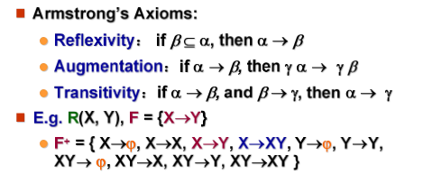
Armstrong 的自反 / 增广 / 传递律推导的衍生规则
| 规则名称 | 形式化描述 | 通俗解读 | 示例 |
|---|---|---|---|
| 合并律（Union） | 若 α→β 且 α→γ 成立，则 α→βγ 成立 | 同一属性集 α 能决定 β 和 γ，就能同时决定 β+γ（合并右边） | 由A→B和A→C，直接得A→BC |
| 分解律（Decomposition） | 若 α→βγ 成立，则 α→β 且 α→γ 成立 | 合并律的逆规则：α 能决定 β+γ，就能分别决定 β 和 γ（拆分右边） | 由A→BC，直接得A→B和A→C |
| 伪传递律（Pseudotransitivity） | 若 α→β 且 γβ→δ 成立，则 αγ→δ 成立 | 传递律的扩展：α 决定 β，γ+β 决定 δ → α+γ 就能决定 δ（左边叠加） | 由A→B和CB→D，得AC→D |
[!note]
三个公理的证明
自反律（Reflexivity）
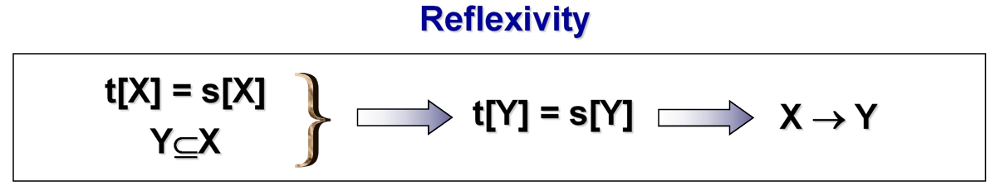
传递律（Transitivity）
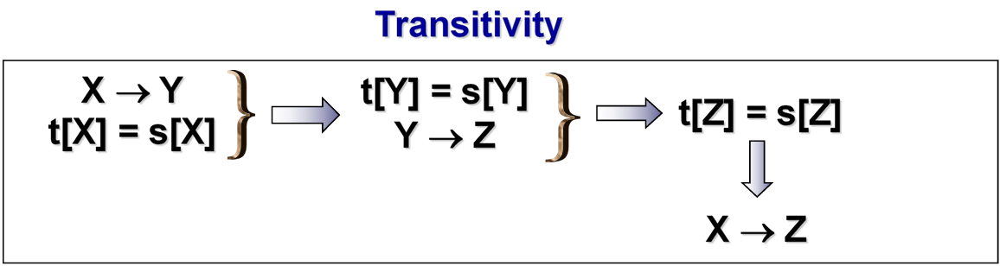
增广律/增补律（Augmentation）
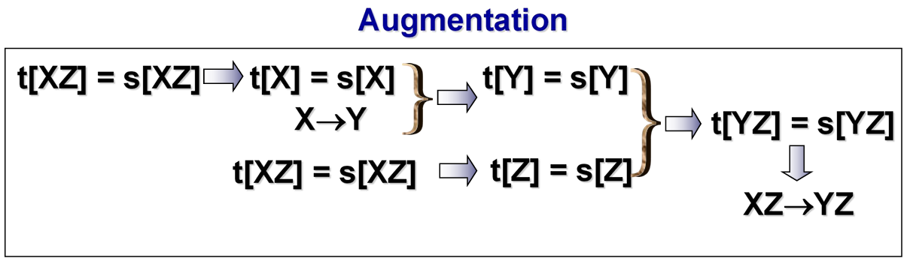
三个额外定理的证明
合并律（union rule）：若 α→β 和 α→γ 成立，则 α→βγ 成立。
α→β （题目已知）1️⃣
αγ→βγ （增补律）2️⃣
α→γ （题目已知）3️⃣
αα→αγ （增补律）4️⃣
即 α→αγ 5️⃣
由 2️⃣ 和 5️⃣ 得 α→βγ （传递律）
分解律（decomposition）：若 α→βγ 成立，则 α→β 和 α→γ 成立。
α→βγ （题目已知）1️⃣
由 β⊆βγ 得 βγ→β （自反律）2️⃣
由 γ⊆βγ 得 βγ→γ （自反律）3️⃣
由 1️⃣ 和 2️⃣ 得 α→β （传递律）
由 1️⃣ 和 3️⃣ 得 α→γ （传递律）
伪传递律（pseudotransitivity rule）：若 α→β 和 γβ→δ 成立，则 αγ→δ 成立。
α→β （题目已知）1️⃣
αγ→βγ （增补律）2️⃣
即 αγ→γβ 3️⃣
γβ→δ （题目已知）4️⃣
由 3️⃣ 和 4️⃣ 得 αγ→δ （传递律）
算法通过迭代遍历 + 规则应用，把所有能从 F 推导的依赖 “无遗漏” 地纳入 F⁺，直到 F⁺稳定（无新依赖可加），保证结果的完整性。
To compute the closure of a set of functional dependencies F:
计算函数依赖集F的闭包步骤：
1. F⁺ = F
✅ 初始化为：闭包F⁺先把原始依赖集F全部包含进来（F是F⁺的基础子集）。
2. repeat （重复执行以下步骤）
a. for each functional dependency f in F⁺
apply [Armstrong] rules on f
add the resulting functional dependencies to F⁺
✅ 遍历当前F⁺中的每一条依赖f，对f应用Armstrong公理（自反律、增广律、传递律），把推导出来的新依赖都加入F⁺。
b. for each pair of functional dependencies f1 and f2 in F⁺
if f1 and f2 can be combined using [附加规则]
then add the resulting functional dependency to F⁺
✅ 遍历当前F⁺中每一对依赖f1、f2，若二者能通过后续的“附加规则”（合并/分解/伪传递）组合推导，就把新得到的依赖加入F⁺。
3. until F⁺ does not change any further
✅ 终止条件：当一轮迭代后，F⁺中没有新增任何依赖（所有能推导的都已加入），迭代停止，此时的F⁺就是最终闭包。
NOTE: We shall see an alternative procedure for this task later
✅ 后续会用“属性集闭包”间接验证依赖，效率更高。
属性集闭包（α⁺）
如果 α→β ，我们称属性 B 被 α 函数确定（functionally determine）。要判断集合 α 是否为超码，我们必须设计一个算法，用于计算被 α 函数确定的属性集。
但是由于计算 F+，找出所有左半部为 α 的函数依赖，并合并这些函数依赖的右半部。但是这么做开销大，因为 F+ 可能很大。所以计算属性集的闭包进行替代：
令 α 为一个属性集。我们将函数依赖集 F 下被 α 函数确定的所有属性的集合称为 F 下 α 的闭包，记为 α+ 。
result = α; // 步骤1：初始化结果集为属性集α本身
while (changes to result) do // 步骤2：循环迭代，直到result不再变化
for each β→γ in F do // 遍历F中的每一条函数依赖β→γ
begin
if β ⊆ result then result := result ∪ γ;
// 关键逻辑：若β是当前result的子集（β能被α决定），则把γ加入result（γ也能被α决定）
end
计算 (AG)⁺：
R = (A, B, C, G, H, I)；F = {A → B A → C CG → H CG → I B → H}
- result = AG
- result = ABCG (A → C and A → B)
- result = ABCGH (CG → H and CG ⊆ AGBC)
- result = ABCGHI (CG → I and CG ⊆ AGBCH)
判定超键 / 候选键
判定超键（Superkey）
若 α⁺包含关系模式 R 的所有属性，则 α 是 R 的超键（能唯一决定整条记录）。
判定候选键（Candidate Key）
候选键是「最小超键」—— 超键中去掉任何一个属性后，就不再是超键。所以首先判断是否为超键，如果不是那不可能是候选键，如果是则检查超键的所有真子集是否存在超键，不存在则为候选键
- 判定步骤：
- 先确认 α 是超键；
- 检查 α 的所有真子集（比如 AG 的子集是 A、G），判断是否为超键：
- 计算 A⁺：A→B→H，A→C → A⁺=ABCH（不包含 G、I）→ A 不是超键；
- 计算 G⁺：G 无法决定任何属性 → G⁺=G（远小于 R）→ G 不是超键；
- AG 的所有真子集都不是超键 → AG 是 R 的候选键。
所以要验证 α→β 是否是 F 的隐含依赖（属于 F⁺），只需计算 α⁺，看 β 是否是 α⁺的子集。
如果 α 能决定的所有属性（α⁺）包含 β，说明 α→β 必然成立；反之则不成立。
- 验证
AG→H是否成立：H⊆(AG)⁺（ABCGHI）→ 成立；- 验证
A→I是否成立：I⊈A⁺（ABCH）→ 不成立。[!tip]
如何通过 α⁺计算 F⁺：
- 遍历 R 的所有属性子集 γ，计算每个 γ 的闭包 γ⁺；对 γ⁺中的每一个子集 S，γ→S 都是 F⁺中的依赖。
本质：通过「属性集闭包」间接生成完整的 F⁺（避免直接计算 F⁺的指数级复杂度）。
γ=A，γ⁺=ABCH → F⁺包含
A→A、A→B、A→C、A→H、A→AB、A→ABC等所有 A→S（S⊆ABCH）的依赖。
候选键的计算
候选键是「最小超键」，需满足 “能唯一决定所有属性 + 去掉任意属性后不再是超键”
先将属性按在函数依赖集F中的位置分类，再利用定理缩小候选键范围：
| 属性分类 | 定义 | 定理（候选键包含性） |
|---|---|---|
| 左部（L 类） | 只出现在F的依赖左边 |
一定出现在所有候选键中 |
| 右部（R 类） | 只出现在F的依赖右边 |
一定不出现在任何候选键中 |
| 双部（LR 类） | 出现在F的依赖两边 |
可能出现在候选键中 |
| 外部（N 类） | 不在F中出现 |
一定出现在所有候选键中 |
- 筛选基础属性：先收集 L 类 + N 类属性，组成初始集合
K； - 验证初始闭包：计算
K⁺，若K⁺包含所有属性，则K是候选键； - 补充 LR 类属性：若
K⁺不包含所有属性，逐一将 LR 类属性加入K，计算闭包，直到K⁺包含所有属性； - 验证最小性：去掉
K中任意属性，若闭包不再包含所有属性，则K是候选键。
还有替换法（All-Candidate Keys 算法）:利用双部属性的 “双向依赖” 特性，通过「去掉一个双部属性 + 替换为其依赖的左部属性」，生成新的候选键
- 步骤 1：调用
Key-Finding(U,F)，先找到任意一个候选键（记为K）； - 步骤 2：将
K加入队列Q，用于后续替换； - 步骤 3：循环处理队列
Q中的候选键：- 取出队列头的候选键
K； - 提取
K中的双部属性（出现在依赖两边的属性）； - 对每个双部属性
A，遍历依赖集F，找到包含A的依赖X→Y（A∈Y）； - 生成新候选键
K' = (K - A) ∪ X，若K'未在队列中，则加入队列；
- 取出队列头的候选键
- 终止条件：队列
Q为空，此时收集的所有候选键即为结果。
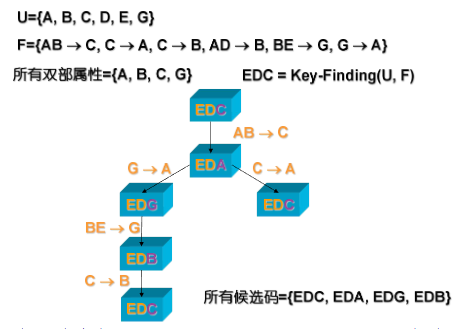
正则覆盖
函数依赖集F中可能存在两种冗余，需通过正则覆盖简化：
- 冗余依赖：某条依赖可由其他依赖推导（如
A→C在{A→B, B→C, A→C}中冗余）； - 依赖中冗余属性
- 右部冗余：如
A→CD中C可由A→B, B→C推导，简化为A→D； - 左部冗余：如
AC→D中C可由A→B, B→C推导，简化为A→D。
- 右部冗余：如
[!tip]
无关属性：如果去除函数依赖中的一个属性后，依赖集的闭包不变，则该属性是「无关属性」
- 左部无关属性：若
A∈α，计算(α−A)⁺，若包含β，则A在α中无关；
- 简单来说就是减少左部
α已知条件A重新计算属性闭包a+，看闭包是否包括右部β,包含则说明不需要A，α也可以推出β，A在α中无关紧要可以去除- 右部无关属性：若
A∈β，计算α⁺（基于F' = (F−{α→β}) ∪ {α→(β−A)}），若包含A，则A在β中无关。
- 或者通过一个简单的办法，不需要构造新的函数依赖集，而是尝试假设α无法决定A，然后计算α的闭包α+是否包含A，包含则A在
β中无关- 即在已知条件左部
α的情况下，修改函数依赖集，将α→β修改为α→(β−A)，然后重新计算闭包α+是否包含A，包含则说明可以通过其他依赖推出A，没有必要写到右部β中“强依赖→弱依赖”：
- 若存在依赖
X→Y，则任何包含X的左部（如XZ→Y）都是 “更强的依赖”，必然能推出原依赖；- 若存在依赖
X→Y，则任何包含于Y的右部（如X→Y'，Y'⊆Y）都是 “更弱的依赖”，必然能被原依赖推出。
正则覆盖是与F等价的最小依赖集，满足：无冗余依赖、无无关属性、左部唯一，计算步骤：
- 合并相同左部：用「合并律」将左部相同的依赖合并（如
A→B和A→C合并为A→BC）； - 删除无关属性：先判定左部、再判定右部，删除无关属性；
- 循环优化：重复上述步骤，直到依赖集不再变化。
（
R=(A,B,C), F={A→BC, B→C, A→B, AB→C}）
- 合并左部：
A→BC（合并A→BC和A→B），F={A→BC, B→C, AB→C}；- 删左部无关属性：
AB→C中A无关（B⁺=BC包含C），简化为B→C；- 删右部无关属性：
A→BC中C无关（A⁺=ABC包含C），简化为A→B；- 最终正则覆盖：
F_c={A→B, B→C}。
无损连接（Lossless-join）
在好的关系设计中存在无损分解的解释，但是其针对于两个关系模式（表）而言，现在这个无损连接则是通过函数依赖进行判断分解是无损分解
含义一致：分解后的子表通过自然连接能完全还原原表数据（不丢失、不产生脏数据），称为 “无损连接分解”。
判定条件（充分条件）：若关系R分解为R1、R2，且至少满足以下之一，则分解是无损连接：
R1∩R2 → R1（公共属性是R1的超键）；R1∩R2 → R2（公共属性是R2的超键）。
该条件是 “充分非必要” 的（仅当所有约束都是函数依赖时，才是必要条件）；
依赖保持（Dependency Preservation）
Fi是函数依赖闭包F+的子集，且Fi中的所有依赖，仅包含子表Ri的属性（即依赖的左部、右部属性都在Ri中）。即Fi 是「原表所有依赖中，能完整落在子表 Ri 里的那部分依赖」（包括直接定义的和隐含的）。
依赖保持：若 “所有子表依赖集的并集” 的闭包，等于 “原表依赖集 F 的闭包”，则该分解是依赖保持的。
为什么需要依赖保持？因为若分解不保持依赖，验证某条依赖是否被满足时，需要把多个子表连接起来（还原原表）才能校验
依赖保持的通用判定算法：
当需要验证「某条具体依赖 α→β 是否被保持」时，可通过以下多项式时间算法判定（无需计算庞大的 F+）
result = α; // 步骤1：初始化结果集为依赖的左部α
while (changes to result) do // 步骤2：循环扩展result，直到不再变化
for each R_i in the decomposition // 遍历所有子表R_i
t = (result ∩ R_i)^+ ∩ R_i // 计算“result与R_i的交集”的闭包，再取与R_i的交集,注意此时的闭包基于原依赖集 F 计算
result = result ∪ t // 步骤3：将t加入result，扩展α能决定的属性范围
// 步骤4：判定结果
If result contains all attributes in β, then α→β is preserved.
// 若最终result包含β的所有属性，则该依赖被保持；否则不被保持
分解算法（Decomposition Algorithm）
BCNF（Boyce-Codd 范式）分解
可以通过计算F+加上BCNF的定义用于检查一个关系是否属于BCNF，但是F+计算复杂，所以在某些情况下，判定一个关系是否属于BCNF可以作如下简化，只能分解之前使用：
- 为了检查非平凡的函数依赖 α→β 是否违反 BCNF，计算 α+( α的属性闭包)，并且验证它是否包含 R 中的所有属性，即验证它是否是 R 的超码。
- 检查关系模式 R 是否属于 BCNF，仅须检查给定集合 F 中的函数依赖是否违反 BCNF 就足够了，不用检查 F+ 中的所有函数依赖。
一个关系分解后，后一步过程就不再适用。也就是说，当我们判定 R 上的一个分解 Ri 是否违反 BCNF 时，只用 F 就不够了，只能在 F+ 的范围。
（R=(A,B,C,D,E), F={A→B, BC→D}）
- 分解后 R2=(A,C,D,E)，F 中无依赖仅包含 R2 的属性，易误判 R2 满足 BCNF；
- 实际 F⁺中存在 AC→D（隐含依赖），且 AC⁺=ACBD≠R2 的所有属性（ACDE）→ R2 不满足 BCNF。
BCNF 分解算法：保证无损分解，无法保证依赖保持：
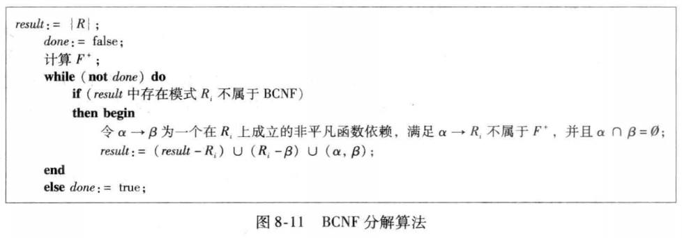
- 求候选键：确定关系的候选键（超键的最小集）；
- 识别违规依赖：检查函数依赖集，若某依赖的左部不是候选键（超键），则该依赖违反 BCNF；
- 拆分关系：用违规依赖（如A→B）拆分原关系：
- 子表 1：
R1=AB（包含依赖的左部 + 右部）；- 子表 2：
R2=(原关系-R1)∪A（保留原关系剩余属性 + 依赖左部，保证无损连接）；- 更新依赖集：删除子表 1 包含的依赖，保留剩余依赖；（同时需要根据删除的依赖左部A计算闭包A+，将隐含的依赖加入到子表二）
- 迭代验证：对新生成的子表重复步骤 1-4，直到所有子表满足 BCNF
例子：
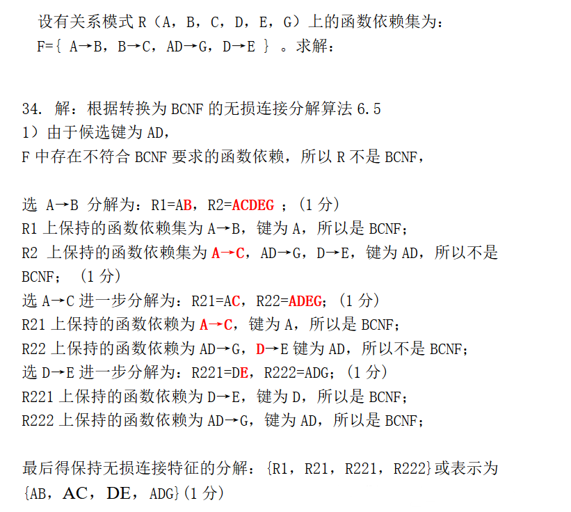
BCNF 分解无法保证依赖保持—— 这是 BCNF 的固有局限，也是 3NF 存在的意义（3NF 能同时保证无损连接和依赖保持）。
3NF 分解
首先重新定义3NF
关系模式R 满足 3NF，当且仅当：对函数依赖集 F 中所有的非平凡依赖 *α*→*β*，二选一成立
- α 是 R 的超键（α+ 包含 R 的所有属性）；
- β - α 中的每一个属性，都包含在 *R* 的某一个候选键中（β⊆ 某候选键）。
比 BCNF 多了第 2 条，所以 满足 BCNF 的关系，一定满足 3NF；满足 3NF 的关系，不一定满足 BCNF → 3NF 是 BCNF 的子集。
尽管3NF 是比 BCNF 更宽松的范式，它放弃了「零冗余」，允许少量冗余存在；但一定能同时满足 无损连接 + 依赖保持。
3NF 判定的「两步高效法」：
- 先计算 α + （属性集闭包）→ 快速判断 α 是不是超键；
- 如果是超键 → 这条依赖直接合规，不用再看了；
- 如果不是超键 → 进入第二步；
- 逐一检查 β 中的每一个属性，是否在 R 的任意一个候选键里；
- 全部都在 → 合规；
- 有一个不在 → 违反 3NF。
最后是3NF 的「标准分解算法」：
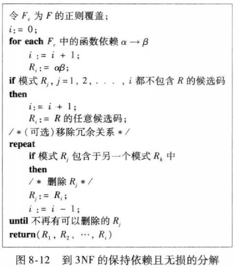
- 求原依赖集的「正则覆盖 Fc」，寻找最小等价依赖集（无无关属性、无冗余依赖、左部唯一）
- 基于 Fc 生成初始子表
- 遍历 Fc 中的每一条函数依赖 α→β，为每条依赖生成一个子表：Ri=α∪β（即子表包含依赖的左部 + 右部，承载该依赖，保证 “依赖保持”）
- 添加候选键子表：检查步骤 2 生成的所有子表：
- 若存在子表包含原关系的候选键 → 无需额外操作（候选键子表已存在，天然保证无损连接）；
- 若所有子表都不包含候选键 → 新增一个子表，属性为原关系的任意候选键（通过候选键关联所有子表，保证分解是 “无损连接”）。
- 删除冗余子表（优化）
- 循环检查所有子表：若某子表 *Rj* 的所有属性被另一个子表 *Rk* 包含（即 Rj⊆Rk）→ 删除 Rj（避免冗余子表）。
例子：
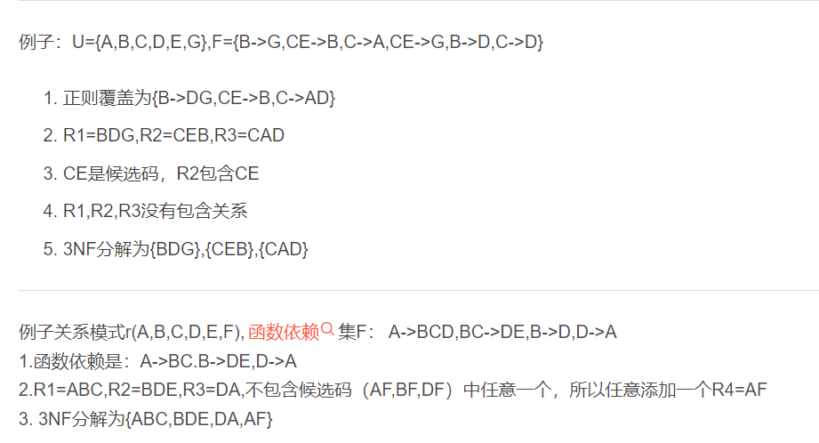
[!tip]
维度 BCNF 分解 3NF 分解 分解策略 逐步拆分违规依赖，次序相关 基于正则覆盖(多个)，覆盖相关 时间代价 指数时间 多项式时间 无损连接 ✅ 保证 ✅ 保证 依赖保持 ❌ 不保证 ✅ 保证 子表数量 较少 可能较多 冗余程度 零冗余 少量冗余